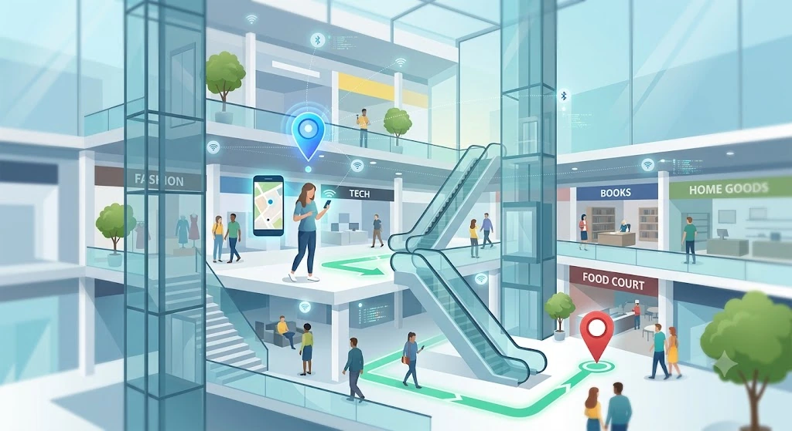
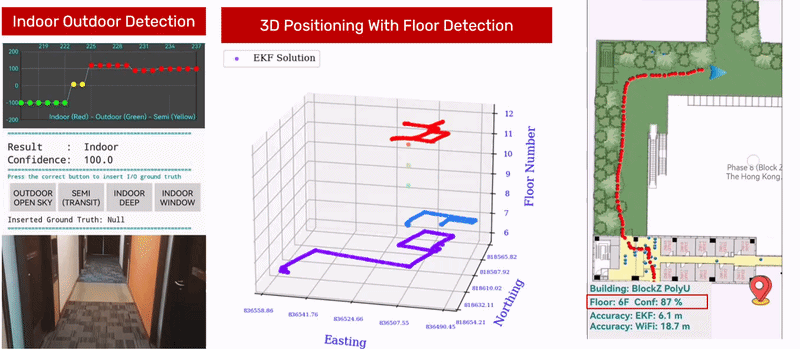

Indoor navigation & wayfinding
Searchable destinations, turn-by-turn guidance, accessible routes, 3D and multi-floor maps, and seamless indoor–outdoor navigation in mobile applications.
Potential delivery · navigation app and routing engineINDOOR POSITIONING & NAVIGATION SERVICES
From visitor wayfinding and 3D floor-aware navigation to staff and asset location.
We design and develop custom indoor positioning and location-aware mobile solutions for hospitals, shopping malls, campuses, airports, warehouses, and other complex facilities. Projects can combine Wi-Fi, BLE, UWB, inertial sensors, radio maps, and multisensor fusion with Android software, routing, dashboards, and system integration.
Technology selection, expected performance, compatible devices, and implementation scope are determined through a venue-specific feasibility assessment. Scenarios below are illustrative—not installed customer systems.

SERVICES
Start with your operational objective. A project can be a focused software module, a feasibility prototype, or a validated deployment pilot.
Searchable destinations, turn-by-turn guidance, accessible routes, 3D and multi-floor maps, and seamless indoor–outdoor navigation in mobile applications.
Potential delivery · navigation app and routing enginePermission-based staff positioning, equipment tracking, zone presence, geofences, and operational dashboards tailored to the building and user roles.
Potential delivery · tracking pilot and dashboardAndroid apps and SDK-style modules for Wi-Fi/BLE sensing, PDR, multisensor fusion, floor detection, route visualization, and backend integration.
Potential delivery · Android app or positioning SDKSite surveys, automated or assisted fingerprint acquisition, infrastructure assessment, localization reliability diagnostics, and field performance evaluation.
Potential delivery · radio map and test reportVisitors search for a shop, receive a route across floors, and follow guidance through lifts or escalators without needing to understand the building layout in advance.
Conceptual visual for a deployment scenario. It illustrates how a positioning-enabled user experience may look in this venue type.
Have a similar venue or application?
Request a solution for this venue ↗TECHNOLOGY SELECTION
Accuracy, coverage, device compatibility, infrastructure, maintenance, and project scope all influence the technology choice.
Wi-Fi RSS fingerprinting, BLE RSS proximity/fingerprinting, Wi-Fi RTT where supported, and BLE AoA with compatible antenna-array locators.
Anchor/tag or supported-device ranging for applications requiring tighter location constraints, subject to hardware selection and site geometry.
Accelerometer, gyroscope, magnetometer, step estimation, heading estimation, PDR, magnetic map cues, and barometer-based floor evidence.
GNSS outdoors; multi-floor maps, graph routing, map matching, semantic constraints, and optional camera/visual localization where feasible.
DELIVERY APPROACH
The scale depends on your requirements. A project may stop at feasibility or progress through software development, on-site tests, integration, and handover.
Review floor plans, devices, existing networks, users, target accuracy, coverage, available budget, and privacy needs. Agree on measurable evaluation criteria.
Select appropriate technologies and implement the agreed positioning algorithms, radio maps, Android interface, routes, dashboards, or API components.
Evaluate positioning error, floor accuracy, availability, latency, navigation continuity, and operation across realistic routes and conditions.
Supply agreed software, maps, technical documentation, integration guidance, and recommendations for maintenance or expansion.
RELATED IMPLEMENTATION
An author-supplied interface capture demonstrates indoor–outdoor classification, floor-aware trajectory visualization, and positioning results. It provides evidence of prototype development—not an installed customer system or a universal accuracy benchmark.
View the research implementation →
Location accuracy, floor reliability, device compatibility, battery use, and real-time availability depend on the deployment. Tracking and analytics require appropriate permissions, transparent policies, access controls, retention limits, and venue-specific safeguards. Safety-oriented applications must be validated for their intended operational use; the system is not represented as certified life-safety equipment.